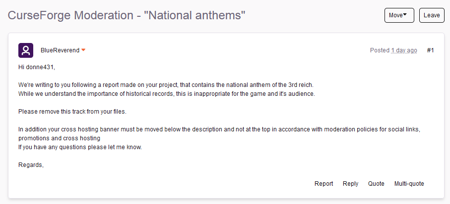
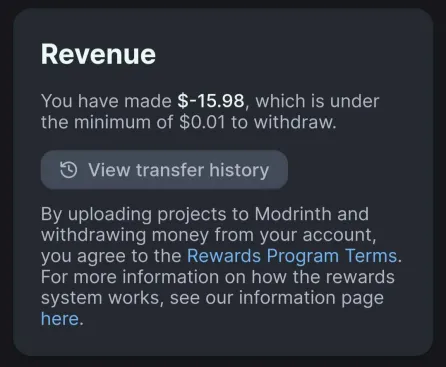

<!DOCTYPE html>
<html lang="en">
<head>
  <link rel="icon" href="../img/themes/active/favicon.png">
  <title>Old Global News | Blog | Donne431</title>
  <meta name="viewport" content="width=device-width, initial-scale=1, maximum-scale=1" />
  <meta name="title" content="Old Global News | Blog | Donne431">
  <meta name="description" content="Welcome to my website! I am Donne431, just a guy, who love made a modifications for games. I'm 16 years old, and I'm from Crimea, Russia (demi-island washed by the Black and Azov Sea). I also like to create almost any content for Minecraft, that is: mods, maps, resource packs, servers.">
  <meta name="keywords" content="Minecraft, Forts, Mods, Resourcepacks, Datapacks, Donne431">
  <meta name="theme-color" content="#4bb4f1">

  <script src="https://code.jquery.com/jquery-3.3.1.min.js"></script>
  <script src="https://cdn.jsdelivr.net/npm/handlebars@latest/dist/handlebars.js"></script>
  <script src="https://mcapi.us/scripts/minecraft.min.js"></script>
  <script src="../js/main.js"></script>
  <script src="../js/lang.js"></script>
  <script src="../config.js"></script>
  <script src="../js/lightbox.min.js"></script>

  <script>tosAgreed = true</script>

  <link rel="stylesheet" href="https://cdnjs.cloudflare.com/ajax/libs/font-awesome/6.7.1/css/all.min.css"/>
  <link rel="stylesheet" href="../css/style.css">
  <link rel="stylesheet" href="../config.css">
  <link href="../css/lightbox.css" rel="stylesheet" media="all">

</head>


<body>

  <div id="target"></div>

  <script id="template" type="text/x-handlebars-template">

  <header>
    <div class="hero" id="hero">
      <a><h1 style="padding-top: 3%;"></h1></a>
    <p> </p>
    <div class="news-card" align="center">
      <a href="../" class="btn"><i class="fa-solid fa-house"></i> Home</a>
      <a href="../Blog" class="btn"><i class="fa-solid fa-newspaper"></i> Blog</a>
      <a href="#links" class="btn" data-translate-key="universal.links"><i class="fa-solid fa-share"></i> Links</a>
    </div>
    <p> </p>
    </div>
  </header>

  <section class="dark">
    <h1 id="news2"><i class="fa-solid fa-newspaper"></i> Old Global News</h1>
    <p align="center">Time zone is UTC+3</p>
    <p></p>
    <div id="news">
      <div class="news-card">
        <strong>Happy New Year 2025! 🥳 (01.01.2025 01:50)</strong>
        <p> </p>
        Happy New Year to you! <br>
For this year I have huge plans: new small mods like Create: Curios Backtank or Create: Crushing Quartz, updates for Ice and Fire Delight, mod for new relics like Enigmatic Legacy or Artifacts (not The fact that I will/will be released), maybe even some client mods, but these are just fantasies! 🤩 <br>
In the last I can only say that I hope that: either I can realize the way to withdraw money from my mods, or receive other buns for advertising. 😅 <br> Because making mods on one enthusiasm is certainly good, but not for people like me, because of the lack of profit from my mods, I often left them for a long time, for example, the same National Anthems and Classic Musical Discs. 😢 <br>
      </div>
      <p> </p>
      <div class="news-card">
        <strong>The results of the 2024th year! 🥳 (01.01.2025 01:49)</strong>
        <p> </p>
        So the year 2024 ended. 😢 The best year itself is among other years of developing my mods for Minecraft. 🤔 <br>
For this year, most of my mods came out, namely 8 new mods! 🤩 Here is the list: Classic Musical Discs, Ice and Fire Delight, Create: Crushing Quartz, Donne431's Music Discs, Donne431's Craftable Iron Golem Spawn Egg, Create: Experium ore, Potion of Flying, Create: Curios Backtank. <br>
It was also this year that my first datapacks and a new resoucepack came out! 🤩 Here is the list: Donne431's Craftable Iron Golem Spawn Egg, Create: Curios Backtank and just the same resourcepack - Forbidden Axe 3D [Enigmatic Legacy] <br>
      </div>
      <p> </p>
      <div class="news-card">
        <strong>Successful fulfillment of promises for the year (2024) #2 🤩 (24.12.2024 07:56)</strong>
        <p> </p>
        Yes, I did such a post, but then I made it in the summer, which was a mistake, now hold the updated post, he will repeat the previous one, so sorry. <br> <br>

Let me remind you that for promises: "Updates for National Anthems (1), new small mods like Logical Recipe of the Cake (2), a mod that adds new ores (3) and the most important addon for Create! (4)" 😀 <br><br>

(1) At the moment, 3 updates and 1 port were released for this year for new versions of NA. <br>
(2) There are more than enough small mods for this year. Here is their list: Donne431's Craftable Iron Golem Spawn Egg, Create: Crushing Quartz, Create: Experium ore, Potion of Flying,  Create: Curios Backtank 🤩 <br>
(3) The same mod on the new ore is Create: Experium ore. 🤔 <br>
(4) During this time, not 1 came out, but as many as 3 addons for Create! Here is their list: Create: Crushing quartz, Create: Experium ore, Create: Curios Backtank. 😁 <br>

Not only did I fulfill all the promises for this year, so I also released several new mods besides them! For example:  Classic Musical Discs,  Ice and Fire Delight and  Donne431's music discs (who, unfortunately, did not live up to my expectations. 🥲 (and by the way, yes, temporarily I froze it, although who knows, maybe forever)) 🤩 <br>
      </div>
      <p> </p>
      <div class="news-card">
        <strong>(10.10.2024 11:20)</strong>
        <p> </p>
        Congratulations, National Anthems was hidden from Curseforge😢 <br>
He was hidden since I could not fulfill the moderation requirements, and why couldn't? Because the project refused to start, well, what will I say, fuck <br>
      </div>
      <p> </p>
      <div class="news-card">
        <strong>(01.10.2024 17:45)</strong>
        <p> </p>
        Yesterday I received a letter from the moderator curseforge. Below is a photo of the letter. 📧 <br>
        <a href="../img/blog/old/NA_Curseforge_Block.png" data-lightbox="roadtrip"></a>
        <p> </p>
If briefly I was asked to remove the anthems of the Third Reich from my mod to anthems (National Anthems) and asked to remove the link to Modrinth mod page. 😅 <br>
As you can understand, I will soon have to make an update for mod and remove the anthem of Nazi Germany from it ... 😅 <br>
On the one hand, it’s a shame somehow, and on the other, I had to expect it, because it already happened when I tried to lay out National Anthems on Modrinth. 🤔 <br>
      </div>
      <p> </p>
      <div class="news-card">
        <strong>(30.09.2024 18:17)</strong>
        <p> </p>
        Well, lads, after almost 20 days I was able to buy a Minecraft license <br>
I bought through PayPal, so it took me almost 20 days. <br>
And as it was already possible to understand the messages above, I bought a license thanks to money from Modrinth <br>
      </div>
      <p> </p>
      <div class="news-card">
        <strong>(11.09.2024 11:04)</strong>
        <p> </p>
        Magic ✨ <br>
        <a href="../img/blog/old/magic.png" data-lightbox="roadtrip"></a>
        <p> </p>
        Now I'm in debt ... but nothing, after 1598 days I will pay them completely 😉 <br>
      </div>
      <p> </p>
      <div class="news-card">
        <strong>Successful fulfillment of promises for the year (2024) 🤩 (30.07.2024 21:51)</strong>
        <p> </p>
        Something I hesitated with the release of this post, but how could I understand, I fulfilled all the promises for this year! 🥳<br><br>
Let me remind you that for promises: "Updates for National Anthems (1), new small mods like Logical recipe of the cake (2), a mod that adds new ores (3) and the most important addon for Create! (4)" 😀 <br>
(1) At the moment, 2 updates and 1 port were released for this year for new versions of NA. <br>
(2) Small mods for this year have been released enough. Here is their list: Donne431's Craftable Iron Golem Spawn Egg, Create: Crushing Quartz, Experium Mod and only released: Potion of Flying. 🤩 <br>
(3) Experium Mod just the same thing for a new ore. 🤔 <br>
(4) During this time, not 1 came out, but as many as 2 addons for Create! Create: Crushing Quartz and Experium mod. 😁 <br><br>
Not only did I fulfill all the promises for this year, so I also released several new mods besides them! For example: Classic Musical Discs, Ice and Fire Delight and Donne431's music discs (which, unfortunately, did not live up to my expectations. 🥲) 🤩 <br><br>
P.S: By the way, probably such a post had to be laid out at the end of the year, but I am too lazy to wait, and after one date I have to sit less on the Internet. 🥲 <br>
      </div>
      <p> </p>
      <div class="news-card">
        <strong>Development of a new mod 🥳 (19.06.2024 21:16)</strong>
        <p> </p>
So the development of a new mod began and again this is a mod adding new music discs, this time the music created by me. 🤩 <br>
This mod is already on moderation in Curseforge and Modrinth, so very soon it will become available to everyone. 🙂 <br>
Honestly, I'm not sure that this mod will also be popular as CMD and even more so as NA, but I will surely say that I will definitely support this mod up to 1.5. 😁 <br>
      </div>
      <p> </p>
      <div class="news-card">
        <strong>Development of a new mod 🥳 (25.02.2024 16:57)</strong>
        <p> </p>
Yes, another new mod ... 🫤, but this time it is not an independent mod, but an addon, and to two large mods: Farmer's Delight and Ice and Fire. 🤩<br>
This addon will add new dishes from the Ice and Fire monsters, starting with ectoplasm jelly, ending with a myrmex resin cookies. 🤤<br>
By the way, there is already a working prototype (or the first snapshot, depending on whether I will release mod🤔). <br>
As I said earlier, I am not sure that I will release the mod, so if you forgive. 😅<br>
      </div>
      <p> </p>
      <div class="news-card">
        <strong>(02.01.2024 21:59)</strong>
        <p> </p>
       *By the way, most likely the most difficult thing for me will be to come up with a normal name for mod 🤣.
      </div>
      <p> </p>
      <div class="news-card">
        <strong>Development of a new mod! 🥳 (02.01.2024 21:34)</strong>
        <p> </p>
Most likely, the development of a new mod will begin soon! He will add new music discs, by the type of mozzart and bach (in other words, the classics), it will also be possible not only classics, but also K-POP, etc., but most likely if I add them, then only in a separate mods. 🤔 <br>
I had the idea of mod when I read the National Anthems review in <a href="ttps://tlmods.org/ru/mods/national-anthems" style="color:#3950c7"> TL Mods </a>, I have so much sunk into my soul that I decided, why not create New Mod? 🤩 <br>
      </div>
      <p> </p>
      <div class="news-card">
        <strong>Happy New Year 2024! 🥳 (01.01.2024 09:54)</strong>
        <p> </p>
Of course I am late, but Happy New Year to you! <br>
This year I have big plans: updates for National Anthems, new small mods are like Logical recipe of the cake, a mod that adds new ores and most important addon for Create! <br>
As for the last 2 mods, I will say right away, they will be small, but at least something. <br>
      </div>
    </div>
  </section>
  <section class="dark">
    <div class="news-card" align="center">
    <a href="../blog" class="btn2"><i class="fa-solid fa-newspaper"></i> Back to Blog</a>
    </div>
  </section>

  <section class="light">
    <h1 data-translate-key="universal.links"><i class="fa-solid fa-share"></i> Links</h1>
    <div id="links" align="center">
      <a href="https://discord.gg/NQBhQRDEhF"></a>
      <a href="https://www.curseforge.com/members/donne431/projects"></a>
      <a href="https://modrinth.com/user/Donne431"></a>
      <a href="https://github.com/Donne431"></a>
      <a href="https://www.donationalerts.com/r/donne431"></a>
    </div>
  </section>

  <footer>
    <a>&copy; {{server_port}} {{server_name}}. All Rights Reserved.</br>{{server_name}} is not affiliated with or endorsed by Mojang Studios or Microsoft<br>{{server_ip}}</a>
    <a></a>
    
  </footer>
  </script>
  <script src="../js/license.js"></script>

</body>
</html>
